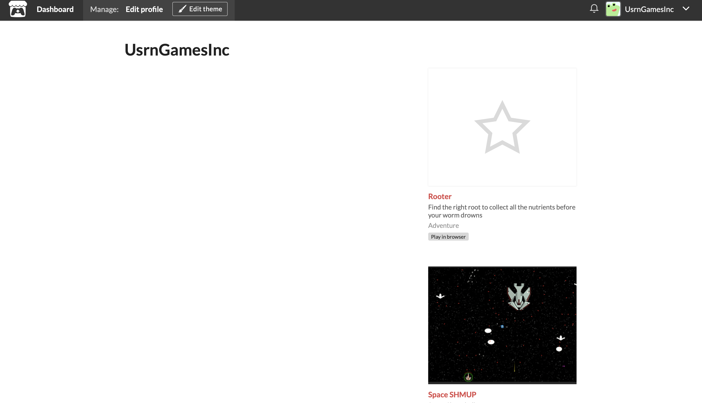
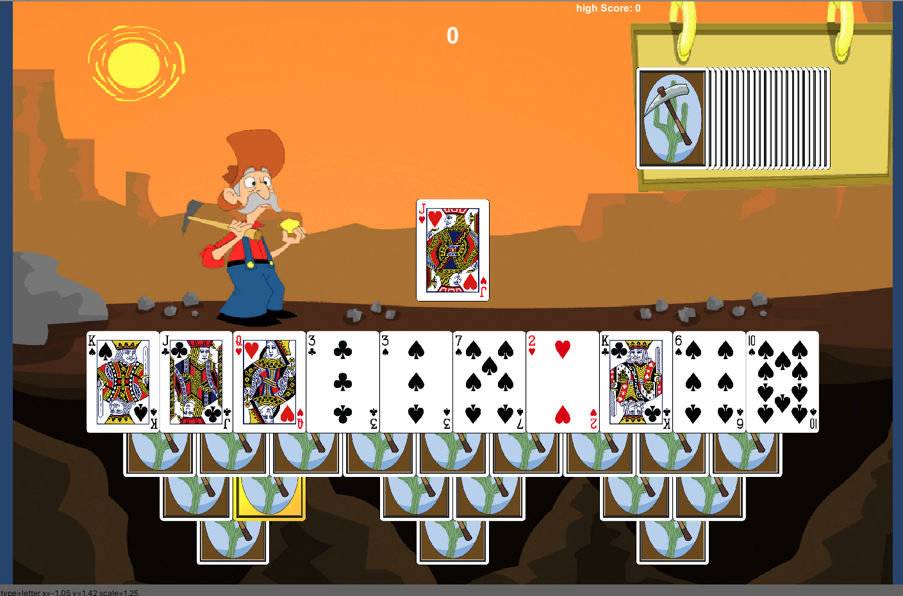
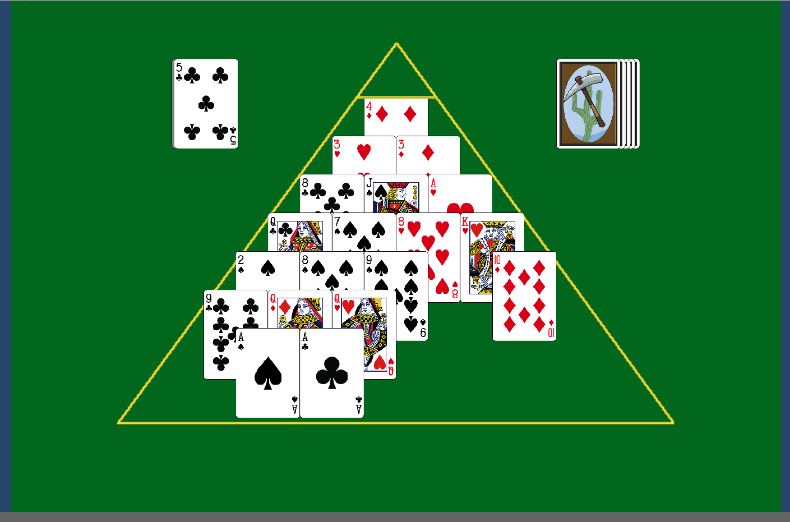

My completed works, projects/games that are 'done' and have reached a completed state. I may go back to update these at a later date, but there are no current plans for this.
1/3
My itch.io page. Its a little sparse right now, but I hope to be able to add more of my completed games to it. I couldn't fit all the games into a single screen shot, so make sure to check out all of the current range.
2/3
Prospector Solitaire, a variant of tri-peak solitaire. Played cards must either be one rank heigher, or lower than the target card in the center. Jack, Queen, and King are 11, 12, and 13 respectivly. Ace is 1. You can also 'round the horn' by going from king to ace, or ace to king.
3/3
Pyramid Solitaire, two chosen cards, either from the pyramid, or from the discard pile must add up to 13 to be discarded. There are three piles in addition to the pyramid. A Draw pile for new cards, a discard pile for matched sets, and a 'target' pile, from which the top card can be used to make a matched set. Jack, Queen, King, and Ace are 11, 12, 13, and 1 respectivly.